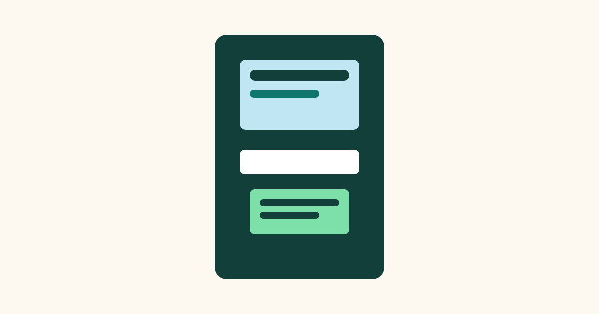

How ATMs Give You Cash Safely

An automated teller machine, usually called an ATM, looks simple from the outside. You insert a card, type a secret number, choose an amount, and cash comes out. Behind that short sequence, however, several checks happen in only a few seconds. The machine must confirm who you are, confirm that the money is available, count the notes correctly, and record the transaction. Understanding this process helps explain why ATMs sometimes ask extra questions, why they can be slow at busy times, and why a few simple habits keep your money safer.
What Happens When You Insert Your Card
When you insert your card, the ATM reads the information stored on its chip or magnetic stripe. This information identifies your bank and your account, but it does not by itself prove that you are the account holder. That is why the machine asks for a personal identification number, or PIN. The PIN is a short code that only the cardholder is supposed to know.
The ATM does not simply accept any card and any number. It sends a secure request to your bank through an encrypted connection. Encryption scrambles the information so that it cannot easily be read if someone intercepts it. Your bank then checks whether the card is valid, whether it has been reported lost or stolen, and whether the PIN matches. Only after these checks does the machine show you the main menu.
How the Machine Knows It Is Really You
The combination of something you have, your card, and something you know, your PIN, is the basic security idea behind an ATM. A stranger who finds a card still needs the PIN, and a person who guesses a PIN still needs the card. This two-part check is much stronger than either part alone.
Most ATMs also limit how many times you can enter a wrong PIN. After a small number of failed attempts, the machine may keep the card or block it temporarily. This is frustrating if you simply mistyped, but it is designed to stop someone from trying thousands of combinations. If this happens, the safest step is to contact your bank directly rather than keep trying at the machine.
How the Cash Is Counted and Given Out
Inside an ATM, banknotes are stored in locked cassettes, which are like strong metal boxes. Each cassette usually holds one type of note, for example only notes of one value. When you request a withdrawal, the machine works out which combination of notes makes up the amount, then feeds those notes through a counting mechanism. Sensors check the thickness and size of each note to reduce the chance of two notes sticking together.
The counted notes are gathered in a small tray behind the shutter. The machine then opens the shutter and waits for you to take the cash. This pause matters. The ATM records the exact moment the money is dispensed, and if the cash is not taken within a short time, many machines pull it back inside for safety. The transaction may still be recorded, so you should check your balance or statement later if this happens.
What Happens After You Take the Cash
Once the cash is taken, the machine sends a final message to your bank confirming that the withdrawal is complete. Your available balance is updated, and a record is created showing the time, the place, and the amount. If you choose to print a receipt, the machine prints a summary of that record. If you do not, the record still exists in your bank account, even though you have no paper copy.
Finally, the machine returns to its welcome screen and is ready for the next person. Some ATMs ask you to take your card before the cash appears. This order is intentional. It reduces the chance that a person walks away with the money and forgets the card in the machine. Taking the card first also gives you a clear reminder that the transaction is finished.
Common Mistakes
One common mistake is typing a PIN while standing close to other people without covering the keypad. Even a quick glance can be enough for someone to learn the number. Another mistake is leaving the receipt behind. A printed receipt may show part of your account number or your balance, so it is better to take it with you or decline it.
People also sometimes walk away before the machine has finished. If a second screen appears, or if the cash or card is still waiting, the transaction may not be complete. Always wait for the welcome screen, take your card and cash, and count the notes before leaving. If the amount looks wrong, keep the receipt and contact your bank as soon as possible.
Frequently Asked Questions
Why does an ATM sometimes keep my card?
An ATM may keep a card after repeated wrong PIN entries, if the card is reported lost, or if the machine detects a fault. It is a safety measure, not a punishment. Contact your bank to find out what to do next.
Why is there a limit on how much I can withdraw?
Limits protect both you and the bank. They reduce the loss if a card is stolen, and they help the machine serve more people before it needs to be refilled with cash.
What should I do if the ATM takes my money back?
Stay calm and note the time and location. Do not try to force the shutter open. Check your account later, and if the amount was still deducted, report it to your bank with as much detail as you can remember.
Is it safe to use an ATM at night?
Well-lit machines in busy, public places are generally safer than isolated ones. If a machine looks damaged, or if someone is standing too close, it is better to leave and use a different machine.
Conclusion
An ATM is more than a box that hands out cash. It is a small, secure link between you and your bank, checking your identity, counting notes carefully, and recording every step. Knowing how it works makes the process less mysterious and helps you use it with more confidence. Cover your PIN, take your card and cash, and check your record, and the simple machine becomes a much safer everyday tool.